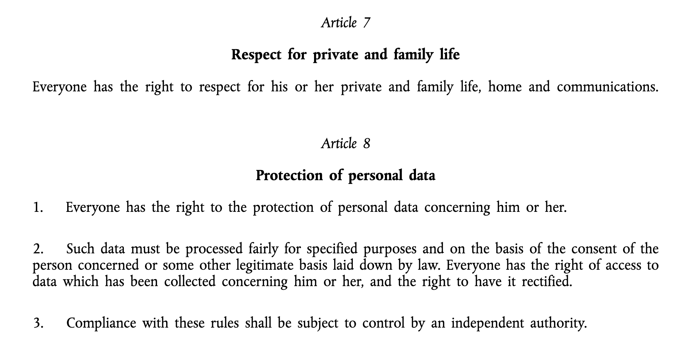
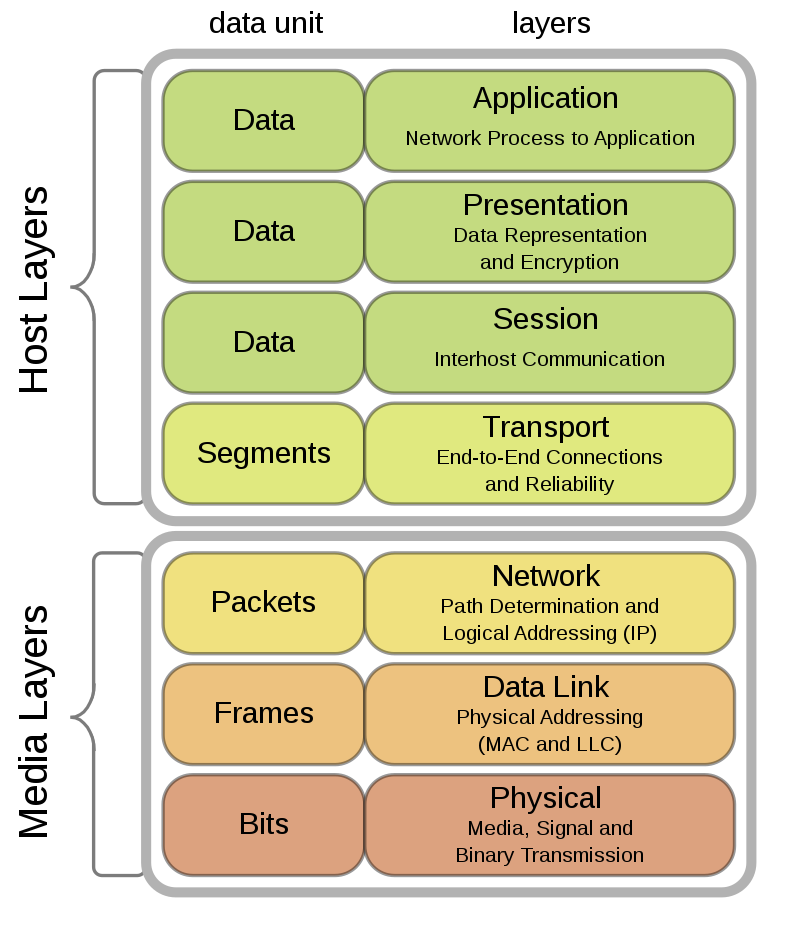
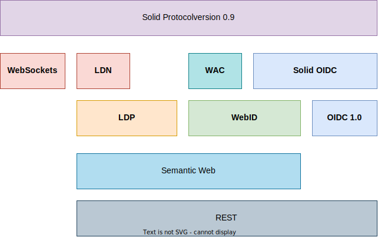
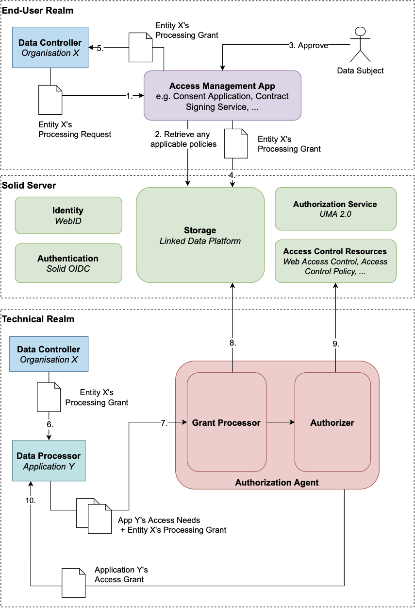

PIDSKG 2022 • 14 June 2022
Enforcing Data Protection in Solid:
A Policy-Oriented Architecture
Laurens Debackere


Overview
- Three ideas
- Brief overview of the Solid specification
-
Problem statement
-
An architecture for enforcing data protection in Solid
-
Discussion
-
Conclusion
Privacy & Data Protection

From the Charter of Fundamental Rights of the European Union
Asymmetries of Power
-
The GDPR didn't fix everything.
-
Processing, collection and analysis of ever increasing amounts of data
-
Take-it-or-leave-it decisions regarding our personal data
-
Materialized in dark patterns, vague wording and lengthy privacy policies
-
Bilateral protections are needed in order to realize data protection
Separation of Concerns
- Fundamental to the design of today's Web
- OSI reference model & TCP/IP Stack
- Layered architecture
- Encapsulated by well-defined interfaces
- Change in one layer shouldn't affect the others

The Solid "stack"

Authorization in Solid: Web Access Control
Uses concept of WebID to authorize access to resources
- Access control rules at Web Scale
- Works reasonably well in social interactions
Authorization on single resource or folder (container)
- Similar to sharing features in e.g. Google Drive, Dropbox, ...
- Inheritance of permissions

Authorization in Solid: Limitations
- IRIs to identify resources and authorized parties.
- Resource naming strategy is mostly arbitrary (developer's choice)
- How does one verify WebID of an agent? (cfr. phishing)
- Inheritance mechanism
- Can be counter-intuitive
- Lead to unintended information disclosure
- Ad-hoc nature of permissions ⇒ increase in complexity for end-user

Web Access Control: Example
@prefix acl: <http://www.w3.org/ns/auth/acl#>.
# Your doctor has Read & Write Access to your Medical Records
<#records> a acl:Authorization;
acl:agent <https://nhs.gov.uk/id/123#me>;
acl:default <./MedicalRecords/>;
acl:mode acl:Read, acl:Write.
Web Access Control: Example
@prefix acl: <http://www.w3.org/ns/auth/acl#>.
# Your doctor has Read & Write Access to your Medical Records
<#records> a acl:Authorization;
acl:agent <https://nhs.gov.uk/id/123#me>;
acl:default <./MedicalRecords/>;
acl:mode acl:Read, acl:Write.
Solid-OIDC 0.1.0: User-Managed Access 2.0
User-Managed Access 2.0
- Defines a grant type for OAuth 2.0
- Enables party-to-party authorization, asynchronously
Relation to Solid
- Currently: Solid Pod is taking on a dual role
- UMA allows for decoupling of authorization from data storage
- Authorization Service introduced in Solid-OIDC 0.1.0
Problem Statement
Web Access Control as an Access Control policy language
- Suited for simple use cases
- Lacks expressivity & interpretability in data processing applications
Limited research into implemention of data sharing patterns in Solid
- With required legal and technical safeguards
Prior research1, 2 on applying more expressive policy languages in Solid
(i.e. ODRL, SPECIAL, ...)
- Further work needed to integrate these languages into Solid
1: Giray Havur, Miel Vander Sande, and Sabrina Kirrane. 2020. Greater Control and Transparency in Personal Data Processing. 655–662. https://doi.org/10.5220/0009143206550662
2: Beatriz Esteves, Harshvardhan J. Pandit, and Víctor Rodríguez-Doncel. 2021.
ODRL Profile for Expressing Consent through Granular Access Control Policies in Solid. In 2021 IEEE European Symposium on Security and Privacy Workshops (EuroSPW).298–306. https://doi.org/10.1109/EuroSPW54576.2021.00038
Research Objective
Identifying shortcomings of Solid's existing Access Control mechanism
- And specifically how it is used by developers.
Reference architecture for complex data processing applications in Solid
- Reconciling end-user and legal requirements for data processing
- Through abstractions built on Solid's existing authorization model
Implementation of this architecture
- Assessing its practical feasibility & performance

Related Work
Architecture: Background
Shape Trees: An Illustration

Architecture: Background
- Data Integrity 1.0
- Introduces authentication and data integrity capabilities to Linked Data
- Used in
Architecture: Vision
End-User Realm
- Governed by Access Management apps
- Higher-level abstractions for classifying data
(e.g. Personal Data Categories)
- Validating data processing request coming from data controller
- Decision is stored in the subject's Solid Pod
Technical Realm
- Governed by the Authorization Agent
- Resource organization using Shape Trees
- Handles access needs of specific agents
- Based on prior approval through Access Management apps
Architecture: Proposal
- Access Management app delivers Processing Grant
- Matching against preferences, legal requirements, ...
- Central: Data Subject's Solid Server
- Personal data organized using Shape Trees
- Processing Grants by the Access Management app
- Authorization Agent receives concrete Access Needs
- In terms of Shape Trees
- Matches these against Processing Grants

Discussion: Architecture
- Avoids introduction of legal or business concepts into low-level authorization mechanism
- Layered abstractions on top of Access Control
- Reduced assumptions on features supported by Solid Pod
- Efficiency of evaluating policies
- Introduction of an out-of-band negotiation step
- No additional policy evaluation required during requests
- However, challenges still exist
- Ex-post compliance checking on Access Control Lists, defining a suitable policy language, ...
Discussion: Implementation
- Limited to current Application Interoperability specification
- Lacks formal specification for some interactions with Authorization Agent
- Introduction of UMA 2.0
- Allows for cleaner separation of concerns
- At the cost of additional request latency
- Could have significant impact in other areas as well.
- Authorizations based on SAI
- Technically feasible, however performance is heavily dependent on amount of data
Conclusion
- Architecture as a foundation for research into access control and data usage policies
- Built on top of the Solid specification through abstractions
- And some of the more recent community proposals
- Further work is needed from technical, legal and user experience perspectives.

A Policy-Oriented Architecture for Enforcing Consent in Solid
Laurens Debackere
IDLab, Department of Electronics and Information Systems, Ghent University - imec
Mail: Laurens.Debackere@Vlaanderen.be
Slides available online at:
github.com/laurensdeb/consent-22-slides
This research is supported by SolidLab Vlaanderen (Flemish Government, EWI and RRF project
VV023/10).